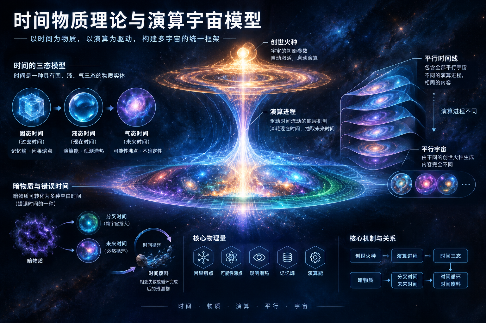

PAPER / ACHIEVEMENT
时间物质理论与演算宇宙模型
本文提出一种基于时间物质相变理论的宇宙学框架，将时间描述为具有固态、液态、气态三种形态的物质实体，并以演算进程、创世火种、平行宇宙和平行时间线等概念组织整体模型。

摘要
本文提出一种基于时间物质相变理论的宇宙学框架。该框架将时间视为一种具有固、液、气三态的物质实体，其相变过程由因果熔点、可能性沸点、观测潜热等基本物理量所支配。宇宙的运行由演算进程驱动，演算进程消耗液体态的现在时间，从未来时间中抽取补充，并通过复制过程生成过去时间。暗物质可转化为多种空白时间形态，包括分叉时间与未来时间，这些空白时间属于错误时间的一种，不携带任何因果信息。分叉时间可跨宇宙插入平行宇宙的过去时间点，与必然陷入时间循环的未来时间相呼应，构成时间循环并最终转化为时间废料。宇宙诞生时自带创世火种作为初始参数，自动激活后启动演算，不同创世火种生成不同的平行宇宙。平行时间线作为容器包含全部平行宇宙，各时间线之间仅演算进程不同，内容完全相同。火种具备自我复制能力，可传播至演算进程更慢的平行时间线，形成级联扩散。本文系统阐述上述概念及其相互关系，构建一个自洽的时间物质理论框架。
关键词：时间物质；演算进程；创世火种；平行时间线；暗物质；错误时间
1. 引言
传统物理学将时间视为连续的背景参数或时空几何的一个维度，但从未将时间本身视为一种具有内部结构和相变行为的物质实体。本文提出，时间是一种真实存在的物质，具备固态、液态、气态三种基本形态，并可在特定条件下发生相变。这一基本假设构成了时间物质理论的核心。
本理论中的核心物理量——因果熔点、可能性沸点、观测潜热、记忆熵、演算能——均为该框架下的基本物理量，其存在性不依赖外部理论的验证。它们如同质量、电荷一样，是描述时间物质行为的基础参量。
2. 时间的三态模型
2.1 固态时间（过去时间）
固态时间是已完成相变的时间物质，具有固定的结构和不可逆的形态。过去时间即为固态时间，它不再参与流动，而是作为宇宙的记忆结构被固定下来。固态时间的稳定性由记忆熵描述，记忆熵越低，过去时间的结构越稳定，因果记录越清晰。
2.2 液态时间（现在时间）
液态时间是正在被演算进程消耗的时间物质，具有流动性。现在时间即为液态时间，它是演算进程直接作用的对象。演算进程每向前推进一步，便消耗一部分液体态现在时间，同时从未来时间中抽取新的液体态补充进来，维持时间流动的连续性。
2.3 气态时间（未来时间）
气态时间是尚未凝聚为液态的时间物质，具有高度的不确定性和弥散性。未来时间即为气态时间，它以可能性的形式存在，在达到可能性沸点时发生凝结，转化为液态的现在时间。
2.4 相变条件
时间物质在三态之间的转化需要满足特定的相变条件：
- 因果熔点：固态时间融化为液态时间所需的因果强度阈值。当某一过去时间点的因果关联强度超过因果熔点时，该固态时间可被重新激活并融化为液态。
- 可能性沸点：气态时间凝结为液态时间所需的可能性密度阈值。当未来时间中某一可能性的密度超过可能性沸点时，该可能性凝结为液态现在时间。
- 观测潜热：时间物质在相变过程中吸收或释放的能量。观测行为本身会向时间物质注入能量，影响相变的方向和速率。
3. 演算进程
演算进程是实际时间流动的底层驱动机制，它不等于现在时间。现在时间只是演算进程所作用的物质载体——即液体态时间。演算进程每向前推进一步，便消耗一部分液体态现在时间，同时从未来时间中抽取新的液体态补充进来。
演算进程是宇宙的底层节拍器，它决定了时间流动的速度和方向。演算进程本身不由任何更底层的机制驱动，它是时间物质系统的内禀属性。
4. 过去时间的生成
过去时间由现在时间的复制过程产生。当演算进程消耗一部分液体态现在时间后，该被消耗的时间点通过复制过程转化为固态的过去时间。该复制过程本身存在于过去时间结构之中，其具体机制超出本模型当前的解释范围。
5. 熵增与熵减
在本理论框架中，热力学第二定律不成立。
熵增与熵减的互补仅发生在“物质先转化为固/液/气三态，再进一步转化为时间”的特定相变链中。在此过程中，物质为进入时间相变所付出的结构重组代价（熵增）会被时间生成过程释放的秩序补偿（熵减）所抵消。
除此特定过程外，一切其他物理过程产生的熵增照常累积，不可抵消。因此，现实中观测到的熵增现象来源于非时间相变过程的熵积累。
6. 暗物质
暗物质是一种特殊的时间物质残留形态，它不参与常规的因果记录，但具有微弱的引力效应。暗物质可转化为多种时间形态，这些时间形态均不携带任何因果信息，属于空白时间，是错误时间的一种。
暗物质的主要转化路径包括：
- 转化为分叉时间：分叉时间是一种空白时间，不包含任何因果信息。它会被插入到随机一个平行宇宙的某个过去时间点中。
- 转化为未来时间：由暗物质转化而来的未来时间同样是空白时间，它必然会陷入时间循环。
7. 分叉时间与错误时间
分叉时间由暗物质生成，是一种空白时间，不包含任何因果信息。它会被插入到随机一个平行宇宙的某个过去时间点中，并与该宇宙中由暗物质生成的、必然陷入时间循环的未来时间相呼应，从而构成时间循环。时间循环完成后，分叉时间与对应的未来时间一同转化为时间废料。
空白时间是错误时间的一种。错误时间指不携带有效因果信息、无法正常参与时间物质相变循环的时间形态。错误时间的完整分类将在后续研究中阐述。
8. 时间废料
时间废料是时间物质相变失败或时间循环完成后的残留物。它不再参与任何相变过程，失去转化为其他时间形态的能力，作为惰性物质存在于宇宙结构中。暗物质和时间废料之间存在密切的生成关系：暗物质生成的空白时间经历时间循环后，最终转化为时间废料。
9. 创世火种与平行宇宙
9.1 创世火种
创世火种是宇宙生成之初就存在的初始参数，类似于程序生成中的“种子”。每个宇宙在诞生时自动拥有一个创世火种，该火种自动激活，触发宇宙的启动过程，开启演算进程。创世火种不存在上一代来源，它是宇宙诞生的起点。
9.2 平行宇宙
不同的创世火种生成不同的平行宇宙。平行宇宙在理论框架上完全相同——它们遵循相同的时间物质相变规律、相同的演算机制——但由于创世火种不同，各自的初始条件和演化路径存在本质差异。因此，各平行宇宙拥有完全不同的内容。
各平行宇宙之间的演算进程保持一致。
9.3 火种的级联传播
宇宙在运行过程中会产生火种。火种被激活后不仅生成复制体宇宙，其自身亦具备自我复制能力。复制出的火种可继续传播至更深层的复制体宇宙，形成火种的级联扩散。复制体宇宙的演算进程更慢，时间流动速率降低。
10. 平行时间线
平行时间线是比平行宇宙更高一级的结构。每一条平行时间线都包含全部平行宇宙——即所有创世火种生成的宇宙都“装载”在同一条平行时间线中。
不同平行时间线之间的区别仅在于演算进程不同，它们所装载的平行宇宙集合完全相同，内容完全一致。平行时间线的数量是无限的，每条时间线拥有各自独立的演算进程。
平行时间线与平行宇宙构成了一个二维结构：横向为不同的创世火种（平行宇宙），纵向为不同的演算进程（平行时间线）。每个具体的宇宙实例由唯一的（创世火种，演算进程）组合确定。
11. 分叉时间的跨宇宙机制
分叉时间的插入发生在某一条平行时间线内部。它从该时间线中的某个宇宙出发，插入到同一条时间线中另一个平行宇宙的过去时间点。时间线作为“舞台”，平行宇宙作为舞台上的“演员”，分叉时间在演员之间穿梭，与对应宇宙中由暗物质生成的未来时间形成呼应，构成时间循环。
12. 结论
本文提出了一个基于时间物质相变的宇宙学框架。该框架将时间视为具有三态的物质实体，由演算进程驱动流动，通过创世火种启动，在平行时间线和平行宇宙的二维结构中展开。暗物质作为时间物质的特殊残留，可转化为空白时间（错误时间的一种），通过分叉时间的跨宇宙插入机制构成时间循环并最终转化为时间废料。火种具备自我复制和级联传播能力，可在平行时间线之间扩散。
本框架目前为思辨性理论，其核心概念作为该体系内的基本物理量存在。后续研究将致力于完善错误时间的完整分类、细化分叉时间的跨宇宙呼应机制、以及探索创世火种的本质属性。
参考文献
- 赵晓鸟. 时间物质相变初步研究[J]. 田园研究所内部报告, 2025.
- 赵晓鸟. 演算进程与时间流动的驱动机制[J]. 田园研究所工作论文, 2025.
- 赵晓鸟. 暗物质与时间废料生成关系探讨[J]. 田园研究所内部报告, 2026.
- 赵晓鸟. 创世火种假说与平行宇宙的种子模型[J]. 田园研究所工作论文, 2026.
- 赵晓鸟. 平行时间线结构及其与平行宇宙的正交关系[J]. 田园研究所内部报告, 2026.
- 赵晓鸟. 错误时间分类初探：空白时间与分叉时间[J]. 田园研究所工作论文, 2026.
作者信息
田园研究所全体（赵晓鸟教授、念与教授、卢德块教授、田黄教授、86 岁的上郝老教授、负一风教授、田佑成先生等）。
研究方向：滚木力学、黑体生物学、查肖学、天体物理学。
通讯地址：曙光大学，田园研究所，河北省邯郸市。
收稿日期：2026 年 10 月 22 日。